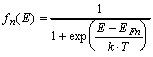
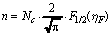
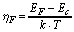
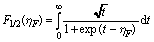
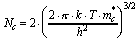
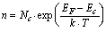
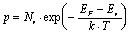
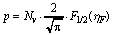
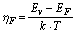

|
Математический Анализ
Распределение элеткронов и дырок по энергетическим состояниям описывается
статистикой Ферми-Дирака, которая представляена функцией распределения:
 (1)
где
E = энергия уровня,
EFn = Энергия Ферми,
T = абсолютная температура, k = постоянная Больцмана,
fn(E) = вероятность, что энергетический уровень с энергией E будет занят
электронами.
Эта формула говорит, что вероятность занятия определяется относительной энергией
пробоя между E и EFn и температурой.
Концентрация электронов зоны проводимости зависит от
(Ec - EF) / kT
Точная формула такова:
 (2)
где

Здесь F1/2 - это интеграл Ферми
степени 1/2, определённый как:

а Nc - это эффективная плотность
состояний зоны проводимости, задаваемая как:
.
Аппроксимация может быть произведена, если Ec
- EF > 3 kT. В
таком случае,
.
(3)
Эта формула применима, если n < 0.05
Nc. Поэтому, если донорная примесная концентрация Nd меньше,
чем около 5% от Nc. Если
Nd > 0.05 Nc, то точная формула (2) может быть
использована.
При комнатной температуре, эффективная плотность состояний такова:
| |
Si |
GaAs |
Ge |
| Eg(эВ) |
1.12 |
1.42 |
0.66 |
| Nc [cм-3] |
2.8x1019 |
4.7x1017 |
1.04x1019 |
| Nv [cм-3] |
1.04x1019 |
7.0x1018 |
6x1019 |
Подобно этому, для среднелегированного
p-типа, где Na < 0.05
Nv, дырочная концентрация равна:
. (4)
Для высоколегированного p-типа, где Na >
0.05 Nv,
. (5)
где,

|